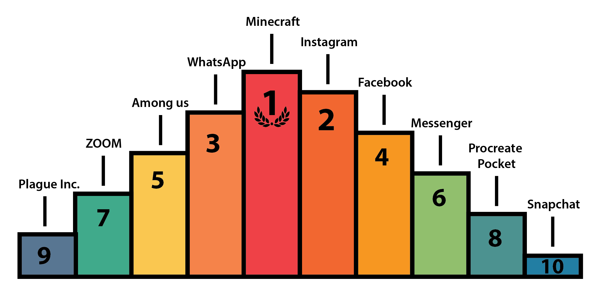

¿Cuánto nos ha cambiado la pandemia? ¿Somos acaso conscientes de la nueva realidad en que vivimos?
El año 2020 ha albergado una de las crisis sanitarias y económicas más devastadoras de todos los tiempos. La mayor parte de las empresas a nivel mundial se han visto afectadas, sin embargo, el sector empresarial de las tecnologías y las comunicaciones han tenido un crecimiento exponencial durante este último año.
¿Cómo hubiésemos atravesado estos meses de cuarentena sin las pantallas, entre ellas, con mención destacada, los teléfonos inteligentes? ¿Qué los ha hecho imprescindibles? Si nos tomamos un pequeño tiempo para pensar, hoy en día se puede hacer casi cualquier cosa con un dispositivo móvil.Son las aplicaciones la razón por la que empleamos cientos de horas con dichos dispositivos, pues simplifican en gran medida los procesos cotidianos: pagar las cuentas, revisar el estado del tiempo, reservar una mesa en un restaurante, leer, comunicarse con amigos y familiares o simplemente utilizarlo con fines de ocio.
Un estudio realizado sobre 16 países, correspondiente a los meses de septiembre a noviembre basado en datos de la App Store reveló qué tipo de aplicaciones descargamos en ios y por qué lo hacemos.
Tal parece que la popularidad de ciertas aplicaciones de renombre como: "WhatsApp Messenger”, "Facebook”, "Messenger" e "Instagram” es interminable, puesto que aparecen con carácter reiterado en los tops de descarga de la mayoría de los países. Dos franquicias, "Among US" y "ZOOM", han emergido con fuerza en los últimos meses y se han ganado el corazón de la comunidad.

Minecraft se encuentra en el top 1 en descargas. Este no es un resultado raro o inesperado, el título se ha convertido por méritos propios en un fenómeno de masas desde su lanzamiento en 2009. Lo que nos lleva a la pregunta: ¿cuáles son las claves para un éxito de tal dimensión? De hecho, con el desarrollo los gráficos cada vez más realistas, ¿por qué nos gusta tanto un juego creado a cuadros pixelados? El concepto del juego en sí es su principal sustento. En Minecraft puedes recrear casi todo lo imaginable. Está idea de tener una segunda vida virtual y hacer en ella lo que podríamos o no, hacer en la vida real, le es al ser humano inmensamente adictivo.
¿Qué hacemos con el dispositivo móvil? ¿Solo jugamos? No ,en efecto, ya la sociedad no usa solo los dispositivos móviles para jugar, aunque los juegos siguen siendo el tipo de aplicación más descargada dentro de las aplicaciones de pago. Las aplicaciones gratis preferidas son más variadas, donde se incluyen algunas de necesidad básica en estos días: envíos a domicilio, compras y pagos online, entre otras.
Sería interesante conocer cuán similar son dos países respecto al tipo de aplicaciones que prefieren sus habitantes. La región, la cultura y el idioma por solo mencionar pocos aspetos definen completamente la preferencia de ciertos países por determidas aplicaciones. El análisis demostró como países cercanos geográficamente tienen un nivel de similitud media, un resultado semejante fue el obtenido al evaluar países con la misma lengua materna. Aún así, la diversidad siempre está presente, no todos los países atraviesan por la misma situación lo que conlleva diferentes demandas por parte de sus usuarios.
Entre las tantas aplicaciones con que contamos actualmente en las plataformas de descarga, se destacan tres: Among Us, Zoom, Tik Tok, que indudablemente tuvieron una gran aceptación popular durante los largos períodos de cuarentena de este 2020. Cada una de estas aplicaciones tiene más que justificada su fama, pero: ¿Han llegado para quedarse?
Among US es un juego que divierte, entretiene y, sobre todo, sirve para pasar un buen rato con los amigos; por lo que se aleja de esa idea que a veces se proyecta de los videojuegos como aplicaciones adictivas que enganchan a adolescentes y jóvenes y les aíslan de su entorno social y familiar. Todo lo contrario, fomenta la reunión y la comunicación, aunque sea en línea. Ha unido a varias generaciones, detalle que otros videojuegos no han conseguido. Su popularidad se debe a la propia comunidad y en gran medida a los gamers, youtubers e influencers que lo han publicado en sus canales. El juego tiene un argumento sencillo, pero en el fondo es pura estrategia. Si eres admirador de las novelas de Agatha Christie o la saga de Sherlock Holmes, y quieres probar tus dotes de investigador, es el juego perfecto para pasar el rato.
En estos meses donde aún existe un aislamiento social, en muchos países, la necesidad de las personas de intentar mantenerse cerca está sumamente vigente. Lo hacen, cada vez más, mediante las tecnologías de la información y la comunicación. Son muy usuales las llamadas o videollamadas de WhatsApp, las de Facebook u otra red social o aplicación de mensajería instantánea. ¿Pero que nos brinda ZOOM, que es capaz de combatir a estos gigantes de la comunicación?
ZOOM es una aplicación para videoconferencias que permite cualquier tipo de reunión en línea, mensajería o sala de conferencia, todo en una sola plataforma. Una de las ventajas de este sistema es que la sesión de reuniones se puede grabar completamente. Esta funcionalidad es muy útil para periodistas que tienen que hacer entrevistas a distancia tanto en audio como en video, pues Zoom permite grabar la imagen y el sonido, y exportarlos para su posterior uso o edición. Otro elemento útil es la posibilidad de ver trascripciones generadas con inteligencia artificial, así como la captura de notas y elementos en acción.
Si aún no has probado ZOOM, descárgalo ya, es una excelente app para las reuniones virtuales con tus amigos.
La idea de TIKTOK es simple , es una especie de portal en el que puedes imitar voces o vídeos que se han hecho virales en redes sociales o en la propia plataforma siendo tú el protagonista. Los videos nunca exceden los 15 segundos y son el fruto de toda la imaginación y la gracia de los usuarios. Probablemente impulsada por los confinamientos y dado su carácter lúdico, descontracturado y creativo, TikTok emergió como uno de las grandes protagonistas de la pandemia. Se trata de un de un fenómeno global que cautivó la escena pública. En palabras de Edwin Rager, estratega creativo, "Es un nuevo lugar en el que la cultura se está armando Tiktok a Tiktok". Y tú, ¿ya eres TikToker?
Con las nuevas tecnologías cada vez más consolidadas se supone que las aplicaciones descargables están llegando a su fin. Uno podría pensar que estamos al borde de una nueva era para las aplicaciones. Sin embargo, el incremento en la demanda de las mismas y el auge de los servicios en línea durante estos últimos meses podría indicar que todavía no han dicho su último adiós.